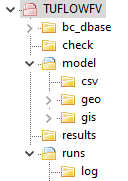
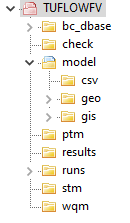
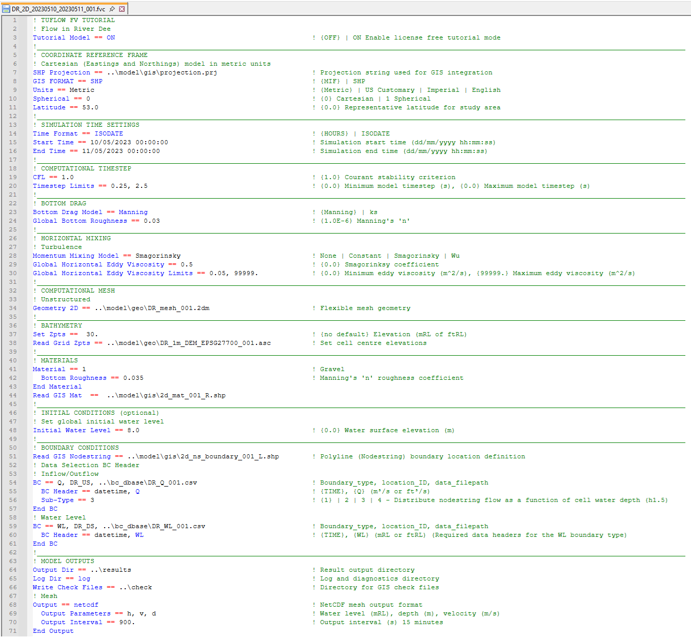
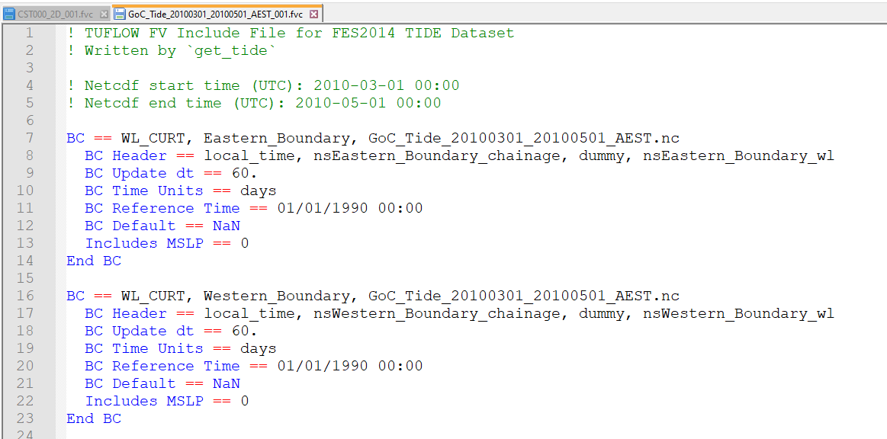

| Control File | Description | Section |
|---|---|---|
FVC |
The TUFLOW FV Control File (.fvc) file sets simulation parameters and directs input from other data sources. This is main control file that TUFLOW FV reads when running a simulation. It is the top level (or parent) file. All input files are accessed via the .fvc file or files referred to from the .fvc file. |
|
TEF |
The TUFLOW Event File (.tef) includes a database of commands related to specific events. The .tef is read from the .fvc using the Event File command. |
|
FVSED |
The TUFLOW FV Sediment Transport Module Control File (.fvsed) includes the commands required for sediment transport simulation. The .fvsed file is read from the .fvc file using the Sediment Control File command. |
|
FVWQ |
The TUFLOW FV WaterQuality Module Control File (.fvwq) includes the commands required for water quality simulation. The .fvwq file is read from the .fvc file using the Water Quality Control File command. |
|
FVPTM |
The TUFLOW FV Particle Tracking Module Control File (.fvptm) includes the commands required for particle tracking simulation. The .fvptm is read from the .fvc file using the Particle Tracking Control File command. |
|
Include File |
A TUFLOW FV Include File is a file included inside another .fvc file. Any file extension be used, with .fvc traditionally used. Include files are useful for commands that are common to multiple simulations or for commands that are rarely or never changed. Include files can help to reduce clutter in the main .fvc file and their makeup are at the discretion of the user. |
4 Folders, Control Files and Data Layers
This chapter describes the recommended TUFLOW FV folder structure, model control files and the input and output data layers used during model development.
4.1 Folder Structure
Table 4.1 presents the standard set of sub-folders used for TUFLOW FV model development. Alternative folder structures may be adopted, however, use of a structure consistent with this standard is recommended to support clarity and maintainability. For large modelling projects involving multiple scenarios and simulations, an extended folder structure may be required. Any such structure should be derived from, and remain consistent with, the standard arrangement described.

| Sub-Folder | Description |
|---|---|
bc_dbase |
Boundary and initial conditions, often with additional sub-folders for specific boundary condition types (e.g. tide, flow, meteorology, etc.). |
check |
If Write Check Files is included in the .fvc, check files will be output from TUFLOW FV. These are a series of output files in both GIS (MapInfo or Shapefile format) and tabular data in .CSV format. These check files contain information on the data processed by TUFLOW FV. |
exe |
Optional sub-folder, placing the TUFLOWFV.exe (and associated dlls) within the TUFLOW FV folder structure may be desired. Alternatively, the tuflowfv.exe is located elsewhere on the network or local computer. |
model |
Include files and the geo, csv and gis sub-folders. May also optionally contain external turbulence nml file. |
model\csv |
Location for csv inputs such as culvert and structure files and z-layer geometry etc. |
model\geo |
Model mesh development often with additional sub-folders or links to locations where mesh development data is located if required. Location for cell elevation files, topographic/bathymetric DEM files and TINs. |
model\gis |
GIS layers that are inputs to the model domain. |
model\gis\empty |
Empty template GIS files. |
runs |
TUFLOW FV simulation control files. Batch files are also stored here when performing multiple simulations in a series. |
Table 4.2 presents the recommended folder structure for advanced simulations that use the TUFLOW FV Sediment Transport, Water Quality or Particle Tracking Modules.

| Sub-Folder | Description |
|---|---|
Recommended sub-folder structure plus the below. |
Recommended sub-folder structure of Table 4.1 plus the below. |
stm |
Sediment control files. |
wqm |
Water quality control files. |
ptm |
Particle tracking control files. |
4.2 Control Files
TUFLOW FV control files are text files that define how a model is constructed and how a simulation is executed. Control files contain a sequence of commands that specify model configuration, input data and execution behaviour. They are designed to be easily scripted and interpreted, are typically concise and support efficient and repeatable modelling workflows.
The subsections that follow describe:
- Each control file type
- Control file rules and notation (Section 4.2.7)
- Use of absolute and relative file paths (Section 4.2.8)
Table 4.3 presents the available control file types.
4.2.1 FVC
The TUFLOW FV Control File (.fvc) defines simulation parameters and specifies references to all required input data sources. It represents the primary control file for a simulation, with all other input files accessed either directly from the .fvc file or through files referenced by it. Each TUFLOW FV simulation requires a corresponding .fvc file. An example extract from an .fvc file is provided in Figure 4.1. A valid .fvc file is required for execution of any TUFLOW FV simulation class.

Appendix A lists and describes all available .fvc commands.
4.2.2 TEF
The TUFLOW Events File (.tef) contains a database of .fvc control file commands used for event management. Event management enables multiple event combinations, such as magnitude, duration, temporal patterns and climate change scenarios, to be simulated using a single set of control files rather than separate control files for each simulation. This approach supports simplified model management, improved consistency between simulations and enhanced quality control. An illustration of the number of .fvc files required for models with and without event management is provided in Figure 4.2.
Instructions for configuring and using event management are provided in Chapter 11. An example implementation of event management is included in the TUFLOW FV Example Model Suite.
Use of a .tef file is optional and is supported for all TUFLOW FV simulation classes.

4.2.3 FVSED
The TUFLOW FV SEDiment Control File (.fvsed) defines sediment properties and contains the commands required for sediment transport modelling.
An .fvsed file is required for simulations using the Sediment Transport (ST) simulation class.
4.2.4 FVWQ
The TUFLOW FV Water Quality Control File (.fvwq) defines water quality constituents and contains the commands required for water quality modelling.
An .fvwq file is required for simulations using the Water Quality (WQ) simulation class.
4.2.5 FVPTM
The TUFLOW FV Particle Tracking Module Control File (.fvptm) defines particle groups and contains the commands required for particle tracking modelling.
An .fvptm file is required for simulations using the Particle Tracking (PT) simulation class.
4.2.6 Include File
Include files may be used to group .fvc control file commands for inclusion within a parent .fvc file. This approach can reduce the size and complexity of primary control files and supports efficient application of global changes across multiple simulations.
As an example, line 59 in Figure 4.1 uses the Include command to read astronomical tide boundary condition commands from the file GoC_Tide_20100301_20100501_AEST_001.fvc, as illustrated in Figure 4.3.
Include files may use any file extension. The most commonly used extensions are .fvc and .trd (TUFLOW Read File).

4.2.7 Rules and Notation
Control files are command or keyword driven text or script files. Commands are entered in free form text, subject to the rules described in this section. Comments may be included on any line or following a command.
An example command is shown below:
Start Time == 10 ! Start at 10 hrs
This command sets the simulation start time to 10 hours. Text following the ! character is treated as a comment and is ignored by TUFLOW FV during interpretation.
Automatic colour coding of control files is available to support readability and interpretation. Download links and installation instructions are provided for the following text editors:
Commands may be repeated as required. This provides flexibility during model construction, particularly for defining two dimensional bathymetry and topography. Where a command is repeated, later occurrences may override the effect of earlier occurrences of the same command.
The input style is flexible, subject to the following rules:
- Certain characters are reserved for special purposes, as described in Table 4.4.
- Commands appearing to the left of == are not case sensitive.
- On Windows operating systems, file paths and file names to the right of == are not case sensitive.
- On Linux operating systems, file paths and file names to the right of == are case sensitive.
- Only one command may be specified per line.
- Some commands require a related command to have been specified previously. These dependencies are documented where applicable.
Blank lines are ignored. Spaces or indentation may be used at the start of a line for clarity. Indentation is recommended when using control blocks, as described in Section 11.3. In the following example, indentation of the second line is not required but improves readability:
If Scenario == GPU
GPU Solver == ON
End IfThe notation used to document commands and valid parameter values in Appendix A is presented in Table 4.5.
| Special Character(s) | Description |
|---|---|
“#” or “!” |
A “#” or “!” causes the rest of the line from that point on to be ignored. Useful for “commenting-out” unwanted commands and for modelling documentation. |
“==” |
A “==” following a command indicates the start of the parameter(s) for the command. Where there is more than one parameter, the parameter values are read as free-field formatted, i.e. are comma delimited. When processing command line syntax within a control file, if a “==” is not present in the command line syntax TUFLOW FV will produce an error message. The two exceptions to this rule are the Initial Condition OGCM and Initial Condition Quiescent commands. For example “If Scenario = Exg” will produce an error as the correct syntax is “If Scenario == Exg”. |
“~ ~” |
Enclosed “~ ~” syntax dynamically replaces the value of events or scenarios. This can occur within the file name of the .fvc file, or text within the .fvc file. |
“<< >>” |
Enclosed “<< >>” syntax is used to return the value of model variables that have been set using the Set Variable command or the value or events or scenarios. |
“$” |
A “$” returns the value of an environment variable that has been set in a batch or shell script. |
spaces |
Spaces can occur in commands and parameter options (although commas are recommended for separating parameters). Spaces can occur in file and path names; however, third party software may not allow this and as such is not recommended. If using spaces in .fvc filenames, batch files will require that the filename is enclosed in quotes. |
tabs |
Tabs can occur in command names and parameter options (although commas are recommended for separating parameters). Tabs should not be used in file names or file paths. |
| Documentation Notation | Description |
|---|---|
< … > |
Greater than and less than symbols are used to indicate a variable parameter. For example, the commonly used <file> example is described below. |
<file> |
A filename (can include an absolute or relative path, or a UNC path). See Section 4.2.8 for a more detailed description. |
[ {Op1} | Op2 ] |
The “|” symbol separates the options. The “{” and “}” brackets indicate the default option. This option is applied if the command is not used. For example, the options for the Momentum Mixing Model command are: {None} | Constant | Smagorinsky | Wu Where the default is None (which does not apply turbulent mixing). |
4.2.8 File Paths
TUFLOW FV control files reference a range of external input files, including CSV, GIS, NetCDF and other control files. File references may be specified using absolute file paths, relative file paths or UNC file paths. A model may use any combination of these methods, although relative file paths are typically preferred.
The following examples demonstrate each file path method using the Read GIS Mat command.
- Absolute file path: Read GIS Mat == L:\Job\Job1234\TUFLOWFV\model\gis\2d_mat_001_R.shp
- Relative file path: Read GIS Mat == ..\model\gis\2d_mat_001_R.shp
- UNC file path: Read GIS Mat == \\server1\Job1234\TUFLOWFV\model\gis\2d_mat_001_R.shp
A relative file path is defined with respect to the location of the control file that references it. In this example, if the command is specified in a .fvc file located in the TUFLOWFV\runs\ directory, the ..\ notation moves up one directory level to TUFLOWFV\. The model\ entry then navigates into the TUFLOWFV\model\ directory, and gis\ further navigates into the TUFLOWFV\model\gis\. Multiple directory levels may be traversed by repeating the ..\ notation, such as ..\..\ to move up two levels.
If the referenced file is located in the same directory as the .fvc file, only the file name is required. In the following example, the file Model_Events.tef is assumed to reside in the same directory as the .fvc file.
Event File == Model_Events.tef
File paths are always interpreted relative to the current control file. A command specified within an event file located in TUFLOWFV\model\ is resolved relative to the .tef file location rather than the .fvc file location.
Relative file paths support portability by allowing models to be relocated or transferred without modification of control files. Where absolute or UNC file paths are used, all references must be updated if the model location changes.
Absolute or UNC file paths may still be appropriate for large shared datasets that are accessed by multiple models. This avoids duplication of large datasets across projects.
Read GRID Zpts == \\server1\share\Lidar\East_Coast_5m.flt
On Linux systems, forward slashes are recommended in preference to backslashes.
Read GIS Mat == ../model/gis/2d_mat_001_R.shp
Forward slashes are supported on both Windows and Linux operating systems. On Linux systems, directory and file names are case sensitive, whereas Windows systems are case insensitive.
4.3 Input Files
4.3.1 Overview
Table 4.6 describes the most common file types used for input to, and output from a TUFLOW FV simulation.
| File | Extension | Description |
|---|---|---|
Comma Delimited Files |
.csv |
Comma delimited text file/s. They can be opened, edited and saved using text editors or spreadsheet software such as Microsoft Excel. |
ArcGIS Shapefile Layers |
.shp |
ArcGIS’s industry standard for GIS vector layers. |
MapInfo MIF/MID Files |
.mif |
MapInfo’s industry standard GIS data exchange format for GIS vector layers. |
ESRI Ascii raster grid |
.asc |
GIS raster data in the widely used ESRI Ascii grid format. |
Binary Float Grid |
.flt |
GIS raster data in the binary versions of the .asc format (see above). |
Triangulated Irregular Network |
.tin |
Triangulated bathymetric/topographic data in the Aquaveo SMS format. |
NetCDF |
.nc |
Regular gridded or curvilinear gridded data files typically used to as input boundary or initial conditions that vary spatially and temporally. These inputs are often derived from outputs from other models and may include wind fields, atmospheric conditions, short-wave forcing or ocean current forcing. |
SMS Mesh File |
.2dm |
Flexible mesh topology definition. |
TUFLOW FV Restart Files |
.rst |
A snapshot of computational results at an instant in time, used for hot-restart of simulations. Output by a previous TUFLOW FV simulation. |
TUFLOW FV Transport File |
_trans.nc |
Boundary condition file with hydrodynamic fields saved off from a previous TUFLOW FV simulation. Used to run simulations in offline hydrodynamic mode. |
4.3.2 Input GIS Layers
The primary types of GIS inputs supported by TUFLOW FV include vector data, raster data and TINs. The following input formats are supported:
- GIS vector data layers: Shapefile (
.shp) and MapInfo (.mif) formats. - GIS raster data layers: Float (
.flt) and ASCII (.asc) formats. NetCDF formats are supported for selected inputs, including time-varying meteorological and ocean data grids. - GIS TIN data layers: SMS (
.tin) format. - CSV data files: (
.csv) format. - NetCDF data files.
The input format is determined solely by the file extension. For example, vector layers using the Shapefile format are identified by the .shp extension, while MapInfo vector layers use the .mif extension.
All GIS layers imported to, or exported from, TUFLOW FV must use a consistent geographic projection. The model projection is initialised using the SHP Projection and MI Projection commands. Multiple input formats may be used within a single model. Where a mixture of input formats is used, a projection command must be specified for each format type.
The default output format for GIS check layers and GIS outputs is determined by the active projection setting. Where more than one projection setting is specified, or where a specific output format is required, the GIS Format command may be used.
4.3.2.1 GIS Vector Layer Commands
Commands containing GIS read from and/or write to GIS vector layers. These commands process the geometry, attribute data and projection information of the specified input layers.
4.3.2.2 GIS Vector Layer Naming Conventions
TUFLOW FV input file types are described in Table 4.7. The prefixes defined in Table 4.7 provide a consistent naming convention for GIS layers and support effective data organisation and interpretation. The .fvc command Write Empty GIS Files may be used to generate template GIS layers that follow the standard naming convention. This process aligns with the TUFLOW FV model initialisation workflow described in Section 5.2.
Model data input is structured to allow an unrestricted number of data sources. Commands may be repeated within control files to construct a model using multiple datasets. For example, model topography may be defined using a base digital terrain model, supplemented by local survey data, with additional three dimensional elevation lines used to define features such as levees or road crests. Sequential reading of datasets supports layered model construction, traceability of data sources and quality control.
| Suggested File Prefix | GIS Data Type | Description |
|---|---|---|
2d_mat_ |
2D Land-Use (Materials) Categories |
Layers to define or change the land-use (material) types on a cell-by-cell basis. |
3d_po_ |
2D Plot (Time-Series) Output Locations |
Layer(s) defining the locations and types of time-series output from the 2D domains. |
2d_sa_ |
2D Source over Area |
Layer(s) defining cell inflow locations. GIS objects with point geometery apply flow to the cell they reside in. GIS objects with polygon geometry will select cells with cell centroids that reside within the polygon boundary. |
2d_zln_ |
2D Elevation Lines |
Optional 2D or 3D breaklines defining the crest of ridges (e.g. levees, embankments) or thalweg of gullies (e.g. drains, creeks). |
2d_ns_ |
Nodestring Lines |
Layers to define the spatial location of open boundary conditions, hydraulic struture 1D/2D connections and flux reporting. |
2d_zn_ |
Zone Polygons |
Layers to define 1D/2D hydraulic structure connections when using Linked Zone structure types. |
4.3.2.3 GIS Vector Layer Attribute Interpretation
TUFLOW FV requires specific attributes to be present in input layers and in a defined order. For example, a material input layer (2d_mat) requires a single attribute that defines the material identifier, whereas a nodestring layer (2d_ns) requires multiple attributes, including the nodestring name and boundary snapping settings. The attributes required for each input layer type are documented in the relevant sections of this manual. Any additional attributes included in a layer are ignored by TUFLOW FV.
The .fvc command Write Empty GIS Files may be used to automate creation of template GIS layers with attribute structures that conform to TUFLOW FV requirements and recommended naming conventions. Template layers may also be generated using the TUFLOW Plugin Import Empty Tool.
TUFLOW FV template files are available from the TUFLOW FV Wiki.
Attribute names documented in this manual or generated by Write Empty GIS Files may change between TUFLOW FV releases to accommodate new functionality. Attribute names themselves are not interpreted by TUFLOW FV. Correct operation requires only that attributes are provided in the required order and with the correct data type, such as character, float or integer. GIS layers with attribute names that differ from those documented in this manual remain compatible provided the attribute order and types are correct.
4.3.2.4 GIS Vector Layer Object Interpretation
Table 4.8 and Table 4.9 describe the GIS object types that are compatible with TUFLOW FV and how those objects are interpreted during model construction.
Object snapping is used to associate point based data with line and region based data. An example application is the Read GIS Z Line command. TUFLOW FV supports point snapping, end snapping and vertex snapping. Edge snapping is not supported.
Where objects are intended to be linked, such as a Z line point layer and a corresponding polyline layer, the layers must be snapped and read into TUFLOW FV using a single command. Linked layers are specified on the same command line and separated by a vertical bar character.
Read GIS Z Line == 2d_zln_Breakwater_001_L.shp | 2d_zln_Breakwater_001_P.shp
| Object Type | TUFLOW Interpretation |
|---|---|
Point |
Refers to the 2D cell that the point falls within or a 1D object such as a node or boundary location. Points snapped to the sides or corners of a 2D cell may give uncertain outcomes as to which cell the point refers to. |
Line (straight line) |
Variety of uses including defining a continuous line of 2D cells, 1D channels, to connect objects, alignment of a 3D breakline, linking 1D and 2D elements. |
Pline (line with one or more segments) |
As for Line above. |
Region (polygon) |
For 2D cells either: - Modifies any 2D cell or cell mid-side/corner (e.g. Zpt) that falls within the region. If the command is modifying a whole 2D cell, it uses the cell’s centre to determine whether the cell falls inside or outside of the region. If the cell’s centre, mid-side or corner lies exactly on the region perimeter, uncertain outcomes may occur. Holes within a region are accepted except for polygon objects in shape layers used for TIN boundaries.- Or, only uses the region’s centroid. Examples are the original flow constriction layers (2d_fc) and time-series output locations for some output data types. For 1D: 1D nodes within the region are selected. |
Multiple (Combined) Objects |
In later versions of TUFLOW, multiple point, polyline and region objects are generally accepted (ERROR or WARNING messages are given if not the case). |
| Object Type | TUFLOW Interpretation |
|---|---|
Arc |
Ignored (do not use). |
Collections |
Not supported. Collections are groups of objects of differing type. |
Ellipse |
Ignored (do not use). |
none |
These objects are ignored and most commonly occur when a line of attribute data is added that is not associated with an object. In MapInfo, this occurs when a line of data is added directly to a Browser Window (i.e. no object was digitised). |
Roundrect (Rounded Rectangle) |
Ignored (do not use). |
Rect (Rectangle) |
Ignored (do not use). |
Text |
Ignored. |
4.3.2.5 GIS Raster Layer Commands
Commands containing GRID read and/or write a GIS raster layer. The format is controlled by the file extension (e.g. .flt or .asc).
4.3.2.6 GIS TIN Commands
The Read TIN Zpts command reads from a TIN file. TIN refers to a triangulation file. The format is controlled by the file extension (e.g. .tin).
4.4 Output Files
| File | Extension | Description |
|---|---|---|
Comma Delimited Files |
.csv |
Text format output geometry check files and stability diagnostic outputs. |
ArcGIS Shapefile Layers |
.shp |
Output GIS check files in ArcGIS’s industry standard for GIS layers. |
MapInfo MIF/MID Files |
.mif |
Output GIS check files in MapInfo’s industry standard GIS data exchange format. |
QGIS Workspace |
.qgs |
Check file written to the log directory. A QGIS workspace file that contains the input and output GIS layers used by a simulation. |
Mapinfo Workspace |
.wor |
Check file written to the log directory. A Mapinfo workspace file that contains the input and output GIS layers used by a simulation. |
NetCDF |
.nc |
The recommended file output format for TUFLOW FV. Supports unstructured 2D and 3D map output. Ability to view raw cell centre, or vertex interpolated results. |
TUFLOW Plot Control |
.tpc |
File read by the TUFLOW QGIS plugin to associate output timeseries data with GIS plotting locations such as flux nodestrings and point outputs. |
Structure Log File |
.slf |
CSV text output that logs the state of hydraulic structures that operate using control block features. For example the .slf can report if a a storm tide gate how a storm tide gate opens and closes during a simulation. |
SMS Super File |
.sup |
SMS super file containing the various files and other commands that make up the output from a single simulation. Opening this file in SMS or QGIS opens the .2dm file and the primary .xmdf file or .dat files. |
SMS Data File |
.dat |
SMS generic formatted simulation results file. Results reported at cell vertices. Supports 2D model outputs or 2D slices of 3D models. |
SMS XMDF File |
.xmdf |
An alternative to using the .dat files described above . .xmdf files are much faster to access and can contain all TUFLOW map output within a single file (rather than one file per output type as for the .dat format). Results reported at cell vertices. Supports 2D model outputs or 2D slices of 3D models. |
TUFLOW FV Log File |
.log |
A log file containing information about the 1D/2D/3D data input process and a log of the simulation. |
TUFLOW FV Restart File |
.rst |
A snapshot computational results at an instant in time, used for hot-restart of simulations. Written to the model log directory. |
TUFLOW FV Transport File |
_trans.nc |
Output file that saves hydrodynamic variable data at a user defined output interval. Used to run subsequent simulations in hydrodynamic offline mode. |